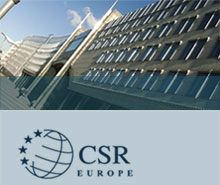

5.1.- Alcance de la RSC en las instituciones
Para que la RSC se convierta en una realidad en la sociedad es preciso que sea interpretada y abordada de forma convincente a partir del esfuerzo del consenso y de la participación decidida de las instituciones internacionales. Es por ello, que la implicación de organismos como las Naciones Unidas, la Unión Europea con la Comunicación relativa a la “Responsabilidad Social Corporativa: una contribución empresarial al desarrollo sostenible”, junto al Foro Europeo Multistakeholder para la RSC y la Organización para la Cooperación y el Desarrollo Económico constituye un compromiso ineludible para que las empresas se esfuercen en la implementación de la RSC.
Es en estos últimos años cuando aparecen significativas directrices y pautas de actuación en RSC por parte de organismos internacionales, cabe citar los antecedentes históricos de las disposiciones de Naciones Unidas, donde destaca el Libro Verde de la Comisión de las Comunidades Europeas del año 2001, de recomendada lectura, cuyo fin es "Fomentar un marco europeo para la responsabilidad social de las empresas”y en particular de la Organización Internacional del Trabajo, que ha jugado un relevante papel en esta materia desde su fundación en 1914. Así su Declaración de Principios Fundamentales y Derechos Humanos es un punto básico de referencia.
Como ya se ha referenciado anteriormente, no hay consenso en los distintos organismos internacionales que trabajan en torno al tema de la Responsabilidad Social Corporativa sobre una definición precisa del término. Muchos de los organismos eluden definirlo, y algunos utilizan principalmente otros términos que a efectos prácticos consideran sinónimos, como el de “ciudadanía corporativa” o “sostenibilidad”.
Algunas instituciones han empezado a desarrollar definiciones operativas, que se van consolidando con la práctica y con el desglose de los aspectos incluidos en el término.
Analizaremos aquí las definiciones desarrolladas por organismos de carácter internacional, tanto público: UE, ONU y OCDE, como privado: WBCSD y CSR Europe, tras presentar un breve perfil de la iniciativa en la que se enmarcan.

5.2.- Comisión de las Comunidades Europeas (Unión Europea): Libro Verde: Fomentar un Marco Europeo para la Responsabilidad Social de las Empresas
Desde la UE se considera que la RSC de las empresas puede contribuir positivamente a alcanzar el objetivo del desarrollo sostenible y evitar las externalidades negativas de impacto social o medioambiental que han tenido las empresas.
En la Cumbre de Lisboa la Unión Europea estableció para la siguiente década el objetivo estratégico de convertirse en “la economía más competitiva y dinámica, basada en el conocimiento, capaz de un crecimiento económico sostenible con más y mejores empleos y una mayor cohesión social”, haciendo por primera vez una llamada expresa a las empresas en torno a su responsabilidad social.
Con la publicación del Libro Verde: Fomentar un Marco Europeo para la Responsabilidad Social de las Empresas en julio de 2001, en adelante, el Libro Verde, y la petición de comentarios a todas las partes interesadas, la Unión Europea ha abierto el debate a escala comunitaria, al dar lugar a una iniciativa legislativa sobre RSC el Consejo Europeo relativa al seguimiento de este Libro Verde, que se une a la Resolución relativa a la Responsabilidad Social de las Empresas.
El Libro Verde de la Comisión Europea tiene una esencia fundamentalmente voluntaria, pero se integra en el contexto establecido por otras iniciativas internacionales.
La Unión Europea publicó el Informe Winter que aconseja no implantar un código único de buen gobierno para toda la Unión. Así mismo, el Parlamento Europeo aprobó la «Resolución sobre la adopción de normas por la Unión Europea para las empresas europeas que operan en países en desarrollo: Hacia un código de conducta europeo» que insta a establecer un código de conducta europeo, basado en las normas internacionales, que contribuya a estandarizar en mayor medida los códigos de conducta voluntarios y a crear una plataforma de seguimiento europea, e incluya disposiciones sobre los procedimientos de denuncia y las medidas correctoras.
Para la Comisión Europea la consideración de desarrollo de la RSC se debe fundamentar en cuatro cuestiones desde el punto de vista de la globalización de los mercados:
El Libro Verde divide las áreas de contenido de la RSC en dos grandes bloques, el primero relativo a aspectos internos y el segundo a aspectos externos, estableciendo que la “ responsabilidad social (...) incluye, además de a los trabajadores y accionistas, a un amplio abanico de interlocutores: socios comerciales y proveedores, consumidores, autoridades públicas y ONG defensoras de los intereses de las comunidades locales y el medio ambiente”.
Una vez recogidos los componentes de la dimensión interna y externa de la RSC, el Libro Verde trata una serie de aspectos concretos, que de forma esquemática son los siguientes:
- Gestión integrada de la responsabilidad social:
- Informes y auditorias sobre la responsabilidad social.
- Calidad en el trabajo.
- Las etiquetas sociales y ecológicas.
- Inversión socialmente responsable.
La Unión Europea con la Comunicación 347 de la Comisión de 2001, presentada en 2002, se dirige a todos los agentes sociales interesados, instituciones públicas europeas y nacionales, interlocutores sociales, asociaciones empresariales, consumidores y usuarios, empresas individuales, e insiste en fomentar este tipo de practicas de RSC dado que aportan un valor a la sociedad y contribuyen a un desarrollo sostenible.
La estrategia de promoción de la RSC que se propone el reconocimiento de la naturaleza voluntaria de la RSC, junto a las practicas de responsabilidad social creíbles y transparentes, además del apoyo y coherencia con los acuerdos internacionales existentes (OIT y líneas Directrices de la OCDE).
Esta estrategia se centrará en las acciones de dar a conocer mejor el impacto positivo de la responsabilidad social de as empresas y en la sociedad, además de fomentar el intercambio entre empresas de experiencias y buenas practicas en materia de RSC y permitir un consenso de estándares que podrían actuar de guía común y emprender acciones de cooperación beneficiosas para el conjunto de empresas implicadas.
La Comisión Europea hizo pública la alianza de RCS abierta a todas las empresas europeas, independientemente de su tamaño, a las que se invita a expresar su apoyo al proyecto. La Alianza se plantea suscitar nuevas asociaciones con las partes involucradas y ofrecerles nuevas perspectivas en sus esfuerzos para promover la RSE.
Mejorar el clima y las condiciones en que operan las empresas en Europa genera a su vez la necesidad de mayor autodisciplina por parte de las empresas. En este contexto, la RSE reviste una importancia creciente para el buen funcionamiento de la economía de mercado.
Con esta «Alianza europea para la responsabilidad social de las empresas», la Comisión se propone fomentar una mayor aceptación de la RSC entre las empresas europeas, así como aumentar el apoyo a la RSC y su reconocimiento.
5.3.- Organización de las Naciones Unidas: Pacto Mundial o Global Compact
En enero de 1999 Kofi Annan, Secretario General de Naciones Unidas propuso por primera vez la idea del Pacto Mundial o Global Compact (GC)”, promoviendo la construcción de los pilares social y ambiental necesarios para mantener la nueva economía global.
Tras unas serie de reuniones preparatorias entre empresas, representantes de distintas agencias de Naciones Unidas, sindicatos y organizaciones de la sociedad civil, se estableció la fase operativa del Pacto Mundial de las Naciones Unidas o Global Compact contando con varios cientos de empresas de todo el mundo lo han suscrito.
El Pacto Mundial o Global Compact fue creado como una iniciativa voluntaria de ciudadanía corporativa y como tal no condiciona de forma obligatoria a las empresas, pero si tiene un fin complementador de normas y códigos que fundamentan la RSC.
El Pacto Mundial no es un instrumento regulador, no vigila, impone normas ni mide la conducta y las acciones de las empresas. Se basa más bien en la rendición de cuentas pública, la transparencia y los intereses sectoriales de empresas, trabajadores y sociedad civil, para iniciar y compartir medidas sustantivas para la promoción de los principios en los que descansa el Pacto Mundial.
El “Global Compact” es un instrumento posicionado de forma única para promover los objetivos de la ciudadanía corporativa global y la responsabilidad social.
Como recientemente mencionó Kofi Annan, ex Secretario General de las Naciones Unidas, pero cuando aún ostentaba el cargo en Madrid, en su presentación ante representantes de empresas e instituciones sociales españolas, el Global Compact supone una “herramienta para renovar los esfuerzos de diálogo y cambio social”.
Los principios del GC no tienen carácter normativo, pero al igual que los principios contenidos en las declaraciones en las que se inspira, pueden llegar a adquirir una autoridad moral indiscutible:
Derechos humanos
Principio 1 “Las empresas deben apoyar y respetar la protección de los derechos humanos reconocidos internacionalmente dentro de su esfera de influencia”
Principio 2 "Las empresas deben asegurarse de no actuar como cómplices de violaciones de los derechos humanos”.
Normas laborales
Principio 3. "Las empresas deben respetar la libertad de asociación y el reconocimiento efectivo del derecho a la negociación colectiva.”
Principio 4. "Las empresas deben defender la eliminación de todas las formas de trabajo forzoso y obligatorio.”
Principio 5. "Las empresas deben defender la abolición efectiva del trabajo infantil.”
Principio 6. "Las empresas deben defender la eliminación de la discriminación respecto del empleo y la ocupación.”
Medio ambiente
Principio 7. "Las empresas deben apoyar la aplicación de un criterio de prevención frente a los retos ambientales.”
Principio 8. "Las empresas deben adoptar iniciativas para promover una mayor responsabilidad ambiental.”
Principio 9. "Las empresas deben fomentar el desarrollo y la difusión de tecnologías respetuosas para el medio ambiente.”
La aplicación del Pacto Mundial se realiza a través de unos mecanismos de compromiso. Las oportunidades para participar en el Pacto Mundial se canalizan por cuatro vías:
|
 |
El Modelo de Acción elaborado por representantes de la ONU, grupos empresariales y organizaciones civiles y sindicales, sirve para comprender de forma practica como integrar los principios del pacto Mundial en la acción de las empresas. Este modelo debe ser observado como un proceso ininterrumpido que ira evolucionando en aras de la mejora continua.
Los principios del Pacto Mundial, junto al dialogo abierto y permanente con los stakeholders, servirán para conformar y enriquecer la visión de la empresa.
La visión será formulada por la cúspide de la organización y consistirá en aquélla ambición compartida por alcanzar un futuro altamente deseable. Esta visión organizativa de carácter directivo recoge los principios del Pacto Mundial, deberá ser difundida dentro de la organización y debe dar lugar a las acciones de liderazgo tanto dela alta dirección como de los equipos de la empresa. Para ello es necesario una correcta, amplia y selectiva atribución de poderes, lo que incluye tareas diversas de selección, formación, promoción y fijación objetivos, delegación de decisiones de poder, libertad de iniciativa y establecimiento de sistemas de recompensas.
El liderazgo y la atribución de poderes se estructuran y consolidan mediante las adecuadas políticas estratégicas de negocio, donde se especifican los objetivos concretos y los planes mediante los cuales se esperan alcanzarlos, destacando en este momento aquellos relacionados con el Pacto Mundial.
En cuanto a los recursos, constituyen los medios empleados para implantar la estrategia, por lo que deben ser asignados y gestionados eficientemente.
Estas acciones interconexionadas de procesos puestos en practica deberán ser vigilados y controlados en sus aspectos claves con un propósito de mejora continua y de fomento de las innovaciones que den solución a los dilemas creados por los principios del Pacto Mundial.
Como resultado de esta implantación de los principios del Pacto Mundial en la planificación de la RSC seguramente se derivará un impacto en la cadena de valor de las empresas.
El comportamiento real de la empresa debe ser medido y recogido en unos informes que permitan conocer en que grado se han alcanzado los objetivos propuestos, estudiar su evolución y comparar con otras empresas.
Tras medir y comunicar a los stakeholders los resultados alcanzados se establecerá un dialogo con los mismos para conocer cual es su grado de satisfacción y expectativas para efectuar las correcciones oportunas en la visión de las empresas para el futuro.
5.4.- Global Reporting Initiative: Sustainability Reporting Guidelines. GRI
Promovida por la organización no gubernamental estadounidense Coalition for Environmentally Responsible Economies (CERES) y por el Programa de Naciones Unidas para el Medio Ambiente (PNUMA).
La Global Reporting Initiave (GRI) es una institución internacional independiente, dotada de una estructura de gobierno en la que participan diversos grupos interesados: empresas, instituciones internacionales, organizaciones de la sociedad civil, asociaciones empresariales, consultores, etc.
Para el cumplimiento de su misión la GRI elabora y difunde las Directrices para la Elaboración de Memorias de Sostenibilidad, aplicables de forma voluntaria por “organizaciones que deseen informar sobre los aspectos económicos, medioambientales y sociales de sus actividades, productos y servicios”.
El objetivo de las Directrices es “ayudar a las empresas y a sus stakeholders a describir y articular mejor su contribución global al desarrollo sostenible”.
En las Directrices se menciona que se utilizan los términos “elaboración de memorias de sostenibilidad” como sinónimos de “elaboración de memorias de ciudadanía”, “elaboración de memorias sociales”, “elaboración de memorias de triple cuenta de resultados” y otros términos que abarcan las dimensiones económica, ambiental y social de la actuación de una empresa.
Las Directrices Global Reporting Initiave son una guía que servirá a las empresas a la hora de decidir que debe incluir en sus informes y que ayudara a los stakeholders a interpretarlos y efectuar comparaciones. Adicionalmente, aunque vayan dirigidas especialmente a las empresas, también puede servir a las organizaciones públicas y entidades sin ánimo de lucro.
Uno de los aspectos claves, y probablemente el mayor reto, del proceso de elaboración de las Directrices es la definición de los indicadores sobre los cuales deben informar las empresas en sus Memorias de Sostenibilidad.
En las Directrices se reconoce que existe menos consenso en cuanto a la selección de indicadores sobre cuestiones sociales que sobre aspectos ambientales y que se trata de un ámbito que “está todavía madurando”. Se precisa también que varios de estos indicadores son eminentemente cualitativos, ya que “muchas de las cuestiones sociales evaluadas no son fácilmente cuantificables”. Estos indicadores sociales están comenzando a ser objeto de críticas en cuanto a sus limitaciones para medir las acciones efectivas y el cumplimiento real de una empresa en torno a cada una de las áreas señaladas, pero a efectos de identificación de áreas contenidas en la responsabilidad social de la empresa el conjunto de indicadores, presentado a continuación, resulta muy ilustrativo por su nivel de detalle.
La Fundación Entorno, IESE y PricewaterhouseCoopers han elaborado conjuntamente el “Código del buen gobierno de la empresa sostenible”. Dicho Código desarrolla la necesidad de hacer compatible el desarrollo económico con el desarrollo social y ambiental, así como poner de manifiesto la estrecha relación entre la sostenibilidad y la creación de valor a largo plazo.
5.5.- Organización para la Cooperación y el Desarrollo Económico: Revised OECD Guidelines for Multinational Enterprises (2000)
Las Líneas Directrices de la OCDE para Empresas Multinacionales, en adelante Líneas Directrices, contienen recomendaciones sobre aspectos sociales y ambientales realizadas por 33 gobiernos, los miembros de la OCDE, más Argentina, Chile y Brasil, a las empresas multinacionales que operan en estos países, y como tal son en la actualidad el único código de conducta multilateralmente adoptado. La comunidad empresarial participó activamente en su actualización para su adaptación a un mundo global.
La OCDE promueve la responsabilidad y la transparencia corporativas a través de las normas voluntarias para una conducta empresarial responsable con las legislaciones aplicables, entre sus objetivos se menciona el de “potenciar la contribución de las empresas multinacionales al desarrollo sostenible” para “garantizar una coherencia entre los objetivos sociales, económicos y ambientales”.
Las Líneas Directrices promueven la responsabilidad y transparencia corporativas a través del enunciado de “principios y normas voluntarias para una conducta empresarial responsable compatible con las legislaciones aplicables”.
La OCDE ha insistido en que suponen una buena práctica para todas las zonas geográficas donde operan las empresas, no sólo en el área de la OCDE.
Las Directrices de la OCDE son también muy ilustrativas en cuanto al desglose de las áreas contenidas en la noción de responsabilidad social corporativa:
En la sección de Principios Generales en el desarrollo de los indicadores sobre cuestiones de DDHH y laborales, la GRI hace referencia expresa a las convenciones de la OIT, a la Declaración Universal de DDHH y a las directrices de la OCDE para Empresas Multinacionales, en un claro intento de armonización entre instrumentos se abre con una disposición que establece que las “empresas deberán contribuir al progreso económico y social y medioambiental con vistas a lograr un desarrollo sostenible”. En esta misma sección se pide que las empresas respeten los derechos humanos de las personas afectadas por sus actividades, estimulen la generación de capacidades locales y fomenten la formación del capital humano. Así mismo se establecen una serie de principios relativos al desarrollo de buenas prácticas de gobierno empresarial y de relaciones de confianza entre la empresa y las sociedades en las que desarrolla su actividad.
5.6.- World Business Council on Sustainable Development(WBCSD)
El World Business Council on Sustainable Development (WBCSD) es una red de 160 empresas internacionales de más de 30 países promovida por el empresario suizo Stephan Schmidheiny, unidas por el propósito compartido de avanzar hacia el desarrollo sostenible a través de tres pilares:
El WBCSD considera que la Responsabilidad Social Corporativa es un elemento clave para un futuro sostenible y desde su nacimiento el WBCSD ha querido contribuir en torno al debate de la RSC, ofreciendo una perspectiva empresarial sobre el tema. Para ello ha impulsado una serie de diálogos de stakeholders o partes interesadas en todos los continentes. Uno de los objetivos del grupo de trabajo constituido en el seno del WBCSD en torno a este tema, integrado por más de un centenar de miembros, ha sido el desarrollar un concepto de RSC e identificar sus elementos constitutivos.
Es interesante observar la evolución de la definición entre los documentos de este organismo. El WBCSD ha reconocido también que “no existe una definición universalmente aceptada de RSC”, la definía como “el compromiso continuo de las empresas de comportarse éticamente y contribuir al desarrollo económico, mejorando a la vez la calidad de vida de los trabajadores y sus familias así como el de la comunidad local y sociedad en general”.
El WBCSD ha elaborado varios documentos de trabajo, dirigidos a sus asociados, en los que pretende contribuir a clarificar el concepto de RSC y su contenido y desarrollar herramientas prácticas para su puesta en práctica.
La participación de los stakeholders se considera un elemento central en la articulación y definición de la RSC de la empresa, imprescindible de cara a entender los principios y valores de todos las partes interesadas en la empresa. El WBCSD reconoce que la definición de las fronteras de la CSR es un “reto continuo”, y para ello ofrece varias perspectivas interesantes para la reflexión por parte de cada empresa. Una de estas perspectivas es la de las “esferas de influencia en la que se definen las diferentes áreas de responsabilidad de la empresa como círculos de diferente diámetro, del área de más control, como las cuestiones de salud y seguridad o el consumo de agua, a la de influencia más indirecta.
La Fundación Entorno WBCSD España presentó su alianza con el World Business Council for Sustainable Development (WBCSD), por la que pasa a ser el miembro de la Red Regional del WBCSD en España.
5.7.- Matriz de Corporate Social Responsibility Europe (CSR Europe)
Corporate Social Responsability Europe (CSR Europe) es una red de ámbito europeo creada por 48 empresas europeas con el nombre de European Business Network for Social Cohesion.
En sus documentos incluye los diferentes enfoques desarrollados por cada uno de sus socios nacionales en los distintos países de la Unión Europea. A título de ejemplo, para Business in the Community, en el Reino Unido, “la RSC es entendida generalmente como la expresión del compromiso de una empresa con la sociedad y la aceptación de su rol en ella. Esto incluye el pleno cumplimiento de la ley y acciones adicionales para asegurar que la empresa no opera a sabiendas en detrimento de la sociedad. Para ser efectivo y visible, este compromiso debe estar respaldado por recursos, liderazgo y ser medible y medido”.
CSR Europe ha elaborado una matriz sobre comunicación e información de aspectos relativos a la responsabilidad social corporativa, con el objeto de alentar a las empresas a informar públicamente sobre sus actividades relacionadas con aspectos sociales y ambientales, facilitar la comparación y autoevaluación de las mismas sobre estos temas y ofrecer información completa sobre prácticas de RSC a los distintos stakeholders .
CSR Europe menciona que las empresas socialmente responsables codiseñan los valores, la misión y la visión con los stakeholders, y los articulan en la gestión diaria de la empresa, pero no hace referencia a un contenido específico de estos aspectos:
- Las condiciones del lugar de trabajo
- El Diálogo Social.
- Derechos Humanos.
- La Participación en la Comunidad.
- El Desarrollo Económico Local.
- El Medio Ambiente.
- El mercado.
- La Ética.
5.8.- Foro Europeo Multistakeholder
Este Foro Europeo Multistakeholder para la RSC se compone de organizaciones representativas a nivel europeo de empresarios, trabajadores, sociedad civil y otras organizaciones del ámbito empresarial. La presidencia le corresponde a la Comisión Europea y están invitadas a participar en el Foro en calidad de observadores otras instituciones de la UE, así como otras organizaciones activas en el terreno de la responsabilidad social.
El foro tiene el propósito de promover la innovación, transparencia y convergencia de las practicas e instrumentos utilizados en materia de RSC. Igualmente estudia la oportunidad de establecer unos principios sobre RSC que actúen como guía de conducta empresarial tomando en consideración las iniciativas existentes en la UE y la legislación e instrumentos internacionalmente aceptados.
El Foro se reunirá a dos niveles. En el nivel más alto habrá dos reuniones al año para marcar las líneas generales, reglas de procedimiento y programa de trabajo, además de evaluar el progreso alcanzado. Adicionalmente existirán otras reuniones con formato de mesas redondas basadas en temas concretos y que se celebraran con una composición mas restringida según haya definido el propio Foro.

¡Enhorabuena! has llegado al final del Tema 5, para poder realizar la autoevaluación asegúrate de haber
revisado bien la teoría
y pulsa el botón de Marcar Tema Completado.